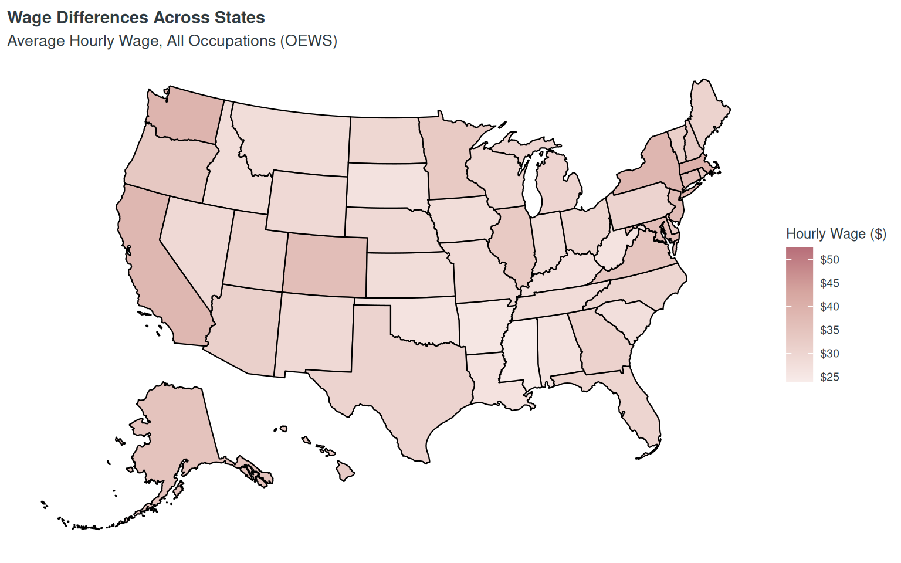
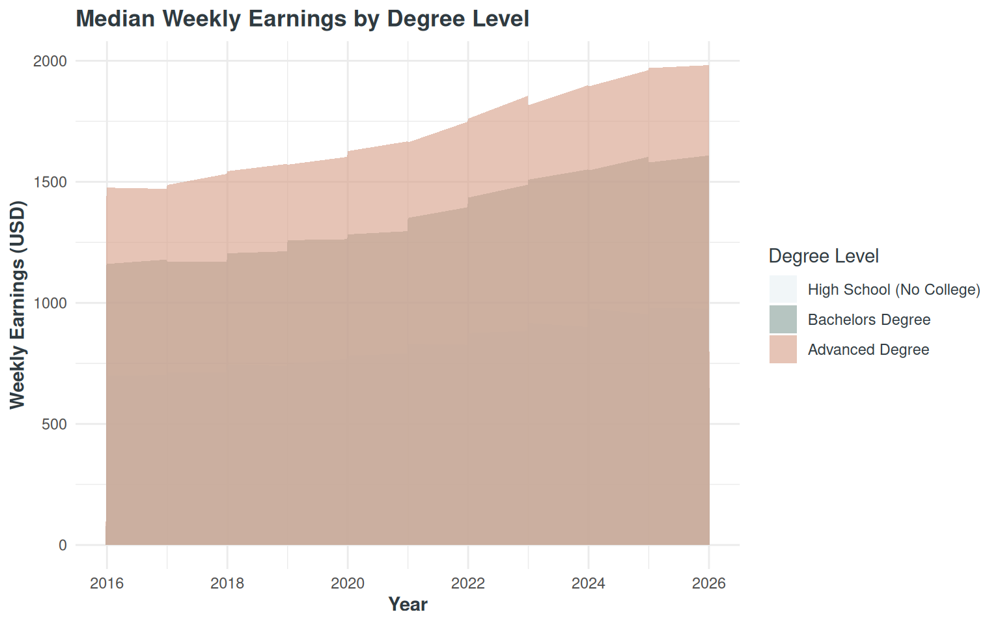
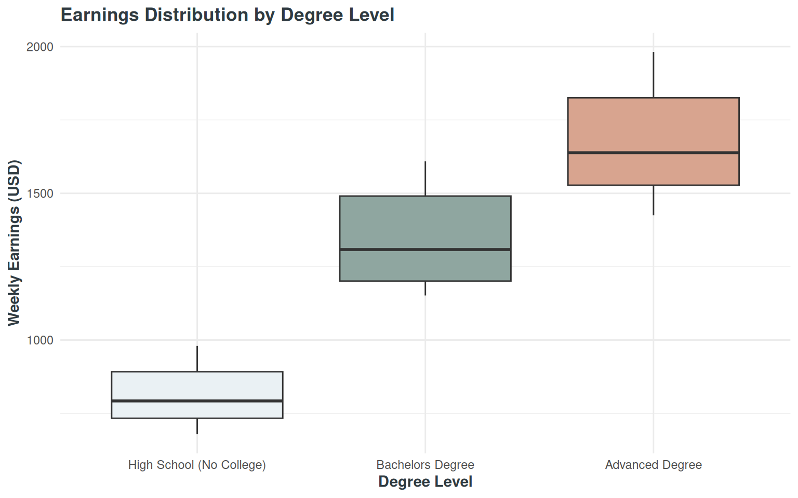

Which occupations are projected to experience the highest employment growth from 2024 to 2034?
| Top Business Occupations by Projected Growth | |||
| Industry | 2024 Employment | 2034 Employment | Growth (%) |
|---|---|---|---|
| Management occupations | 134 | 146 | 9.4 |
| Computer and mathematical occupations | 57 | 62 | 9.2 |
| Business and financial operations occupations | 542 | 567 | 4.7 |
| Sales and related occupations | 30 | 30 | 1.6 |
| Office and administrative support occupations | 328 | 310 | -5.7 |
Client Insights:
This page highlights business-related occupations with strong projected growth over the next decade.
However, fast growth does not always mean a large job market, since some occupations are expanding from a relatively small employment base.
Students should consider both current job size and future growth potential when evaluating career opportunities.
Data Summary:
This analysis compares projected growth across selected business-related occupations from 2024 to 2034.
The average projected growth rate across these occupations is 3.84%.
Several occupations show much stronger projected growth than the overall average, but the fastest-growing roles do not always represent the largest employment markets.
Overall, this page identifies where future business opportunities are concentrated, but growth alone does not guarantee strong earnings.
Students should consider both current job size and future growth potential when choosing a career.
Data Sources:
How do wage growth, inflation, and location differences affect the real value of salaries for new graduates?
Next, we examine whether these growing jobs provide strong real earning value.

Client Insights:
Even though business wages have increased faster than inflation over time, students should not evaluate job opportunities based on salary alone.
Location still matters, because the same salary can have very different value depending on where a student works.
Data Summary:
The indexed comparison shows that business wages rose faster than inflation over the period shown.
By the latest period, the inflation index reached 139.4, while the business wage index reached 148.2.
The most recent CPI-U value is 330.2 as of March 2026.
The average hourly wage across states is $30.87.
This map reflects nominal wages and does not account for cost-of-living differences, so students should treat salary as only one part of career value.
Higher wages do not always mean higher real income.
How does degree level relate to wages? Is there a clear relationship between degree and wage?
Finally, we explore how education level relates to earning potential.


Client Insights:
-Students can decide how much of a degree they want to pursue
-Possibilities of curriculum restructuring based on desired student education paths
-Seeing how wages vary across degree levels to promote higher education
The R value for the correlation between degree level and earnings is 0.918496
Data Sources:
Career Decision Summary
This dashboard helps students evaluate career decisions in three steps:
Overall conclusion: students should balance growth potential, salary value, location, and education requirements when choosing a career path.
Students should compare career options based on opportunity, real earning value, and the education required to reach their long-term goals.
This dashboard was created for college students and academic advisors who want to better understand the business job market.
The dashboard was built using Quarto, RStudio, and the R Language and Environment.
It combines publicly available labor market and earnings data to help users compare career growth, salary value, and education pathways.
Primary data sources used throughout the dashboard include BLS Employment Projections, CPI-U, Current Employment Statistics (CES), Occupational Employment and Wage Statistics (OEWS), and BLS Wages, Pay, and Benefits data.
Allaire J, Dervieux C (2024). quarto: R Interface to ‘Quarto’ Markdown Publishing System. R package version 1.4.4, https://CRAN.R-project.org/package=quarto.
Posit team (2025). RStudio: Integrated Development Environment for R. Posit Software, PBC, Boston, MA. https://posit.co/.
R Core Team (2025). R: A Language and Environment for Statistical Computing. R Foundation for Statistical Computing, Vienna, Austria. https://www.R-project.org/.
Wickham H, Averick M, Bryan J, Chang W, McGowan LD, François R, Grolemund G, Hayes A, Henry L, Hester J, Kuhn M, Pedersen TL, Miller E, Bache SM, Müller K, Ooms J, Robinson D, Seidel DP, Spinu V, Takahashi K, Vaughan D, Wilke C, Woo K, Yutani H (2019). “Welcome to the tidyverse.” Journal of Open Source Software, 4(43), 1686. https://doi.org/10.21105/joss.01686.
Xie Y (2025). knitr: A General-Purpose Package for Dynamic Report Generation in R. R package version 1.50, https://yihui.org/knitr/.
Wickham H, Bryan J (2023). readxl: Read Excel Files. R package. https://CRAN.R-project.org/package=readxl.
Walker K (2023). usmap: US Maps Including Alaska and Hawaii. R package. https://CRAN.R-project.org/package=usmap.
Wickham H (2023). scales: Scale Functions for Visualization. R package. https://CRAN.R-project.org/package=scales.
Sievert C (2020). Interactive Web-Based Data Visualization with R, plotly, and shiny. Chapman and Hall/CRC. https://plotly-r.com/.
Iannone R, Cheng J, Schloerke B (2024). gt: Easily Create Presentation-Ready Display Tables. R package. https://CRAN.R-project.org/package=gt.
Schauberger P, Walker A (2024). openxlsx: Read, Write and Edit xlsx Files. R package. https://CRAN.R-project.org/package=openxlsx.